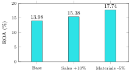

Definition
Purchasing leverage effect: the higher purchases are relative to revenue, the bigger the impact of a purchase-cost reduction on profitability. Indicator: = euros of extra sales needed to match the margin from one euro saved on materials. The lower the ROS, the stronger the effect (retail: low ROS compensated by volumes, so purchasing is crucial). Incidence of purchases: high (retail, metallurgy) over 60%; low (services) 10–20%.
Worked example
Base data (EUR thousand):
| Income statement | Base | Sales +10% | Materials −5% |
|---|---|---|---|
| Sales | 6,050 | 6,655 | 6,050 |
| Direct labour | 1,100 | 1,210 | 1,100 |
| Materials | 3,300 | 3,630 | 3,135 |
| Overheads | 1,000 | 1,100 | 1,000 |
| Cost of goods sold | 5,400 | 5,940 | 5,235 |
| Operating margin | 650 | 715 | 815 |
| Inventory | 1,100 | 1,100 | 1,045 |
| Receivables + cash | 750 | 750 | 750 |
| Fixed assets | 2,800 | 2,800 | 2,800 |
| Total assets | 4,650 | 4,650 | 4,595 |
| Ratio | Base | Sales +10% | Materials −5% |
|---|---|---|---|
| ROS | 10.74% | 10.74% | 13.47% |
| Asset turnover | 1.301 | 1.431 | 1.317 |
| ROA | 13.98% | 15.38% | 17.74% |
| ROA change | +1.4 pts | +3.8 pts | |
| Relative | +10% | +27% |
Materials −5% saves 165 on cost (margin +25%) and values inventory 5% lower (1,100 → 1,045), so both ROS and turnover improve. With : one euro saved on materials is worth about nine euros of extra sales. (The course's version reports 15.60% and 17.5% because it divides the +10% case by 4,595 assets and rounds; the ranking and the conclusion are unchanged.)
Model
Purchasing is strategic beyond cost: it affects product quality; customer service depends on suppliers' reliability and lead times; power and collaboration relations are involved; suppliers' technical skills help develop products meeting the specifications. See ROI and ROA.
Pitfall
A sales increase raises margin and costs proportionally (ROS unchanged); a purchasing saving raises ROS directly. The ratio 1/ROS is an approximation that ignores fixed costs and capacity limits.
Recall
Rebuild the three-column table from memory and explain why the saving beats the sales increase; compute the leverage for ROS = 4%.
Picture

A 5% purchasing saving raises ROA almost three times as much as a 10% sales increase.